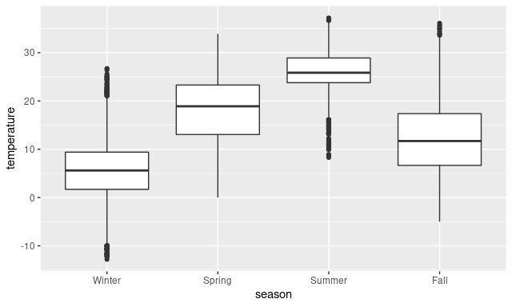
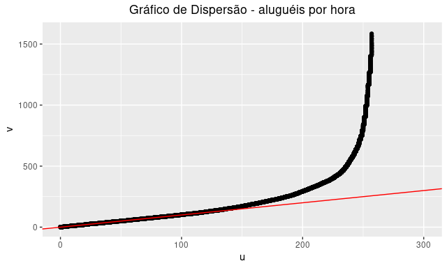
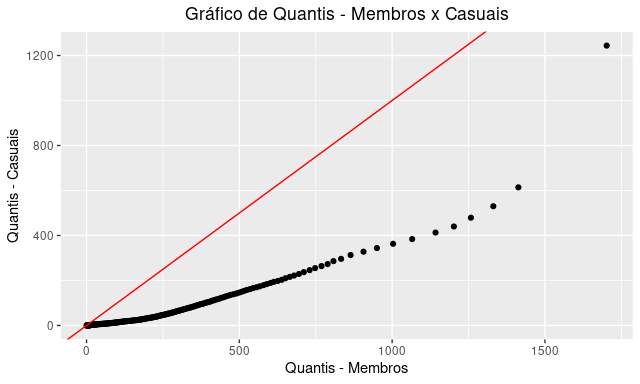
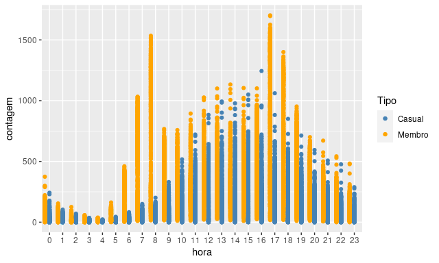
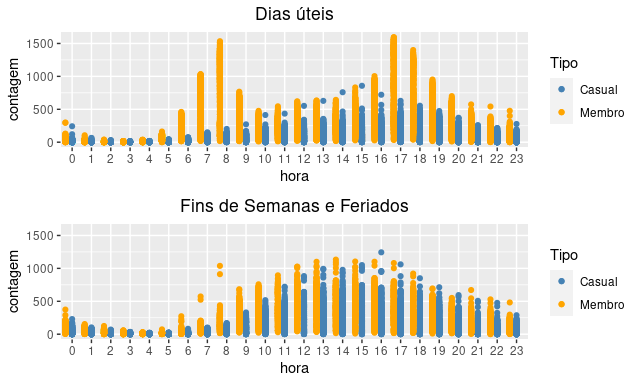
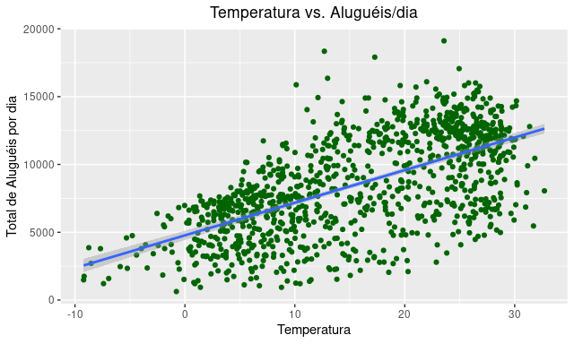
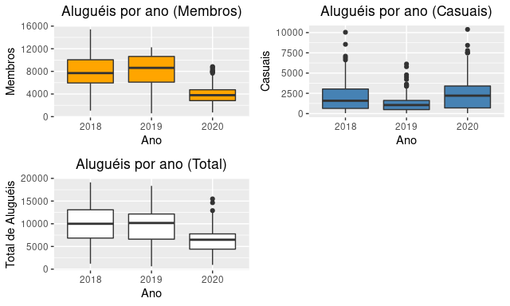
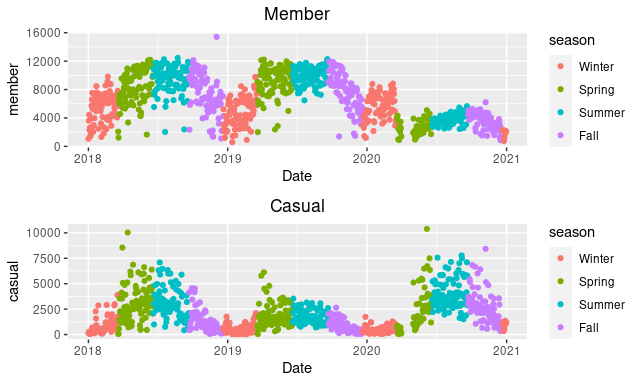

1 Bases de Dados
1.1 Apresentação e Motivações
A base de dados escolhida foi a da Capital BikeShare uma empresa de bicicletas compartilhadas que oferece seu serviço na cidade de Washington D.C e sua vizinhança. A empresa disponibiliza em seu site de forma aberta, todas as corridas realizadas por seus clientes, registrando na base de dados original, dados como hora exata da retirada da bicicleta, local da estação, tipo de cliente, etc, porém algumas simplificações foram feitas para agregar os dados brutos como veremos a seguir.

Uma segunda base de dados, auxiliar a primeira, é uma tabela com temperaturas registradas na cidade de Washington D.C, cuja fonte é National Oceanic and Atmospheric Administration que disponibiliza esses dados atravpes da biblioteca rnoaa.
As motivações para tais escolhas foram duas: A primeira é que o autor que vos escreve é um amante de bicicletas e era um cliente assíduo e fiel da Bike Itaú, um projeto similar de bicicletas compartilhadas que funciona no Rio de Janeiro e em outras cidades. O uso de tais bicicletas era quase diário, tanto pra ir e voltar da faculdade nos dias úteis, quanto pra se exercitar no Aterro do Flamengo aos finais de semana, ou dar uma volta descompromissada na orla da Praia de Botafogo.
O segundo motivo, é um trabalho realizado na disciplina de Fundamentos de Data Science do 2º trimestre do mestrado em 2020. Uma das atividades disponível aqui propunha uma análise exploratória e ajustes de regressão, nos dados da Capital BikeShare. Porém os dados foram dados de forma limpa para os alunos, e só comtemplava os anos 2011 e 2012. A escolha do “mesmo” dataset seria fazer uma releitura da parte exploratória deste outro trabalho, porém usando dados mais atuais, e respondendo perguntas diferentes.
Ao buscar o dado diretamente na fonte (site da empresa), algumas variáveis que estavam disponíveis nos dados limpos do outro trabalho, não estavam lá, com isso veio a necessidade de buscar o dado de temperatura, por exemplo, em uma outra fonte externa e oficial, no caso a NOAA.
Formula-se então algumas perguntas interessantes que podem ser respondidas com a junção desses dois datasets:
- Quais são os horários de pico do aluguéis?
- Como feriados/fins de semana afetam o número de corridas?
- Como as condições climáticas afetam as corridas?
- Como pandemia afetou a empresa em 2020?
2 Extração, Limpeza e Agregação dos dados
2.1 Dados das corridas de bicicleta
A Capital Bikeshare disponibiliza um arquivo zip ara cada mês em seu site, cada zip contém um csv dos registros de corridas mensais. Abaixo podemos ter uma ideia de como é o dado bruto, tomando um exemplo do mês de Janeiro de 2018.
#Carregamento de Bibliotecas
library(lubridate)
library(stringr)
library(dplyr)
library(tidyr)
library(ggplot2)
library(gridExtra)
library(forcats)
library(timeDate)
#Carregamento do dado bruto
bike_path <- "../data/bike/"
example <- read.csv(paste0(bike_path,"201801_capitalbikeshare_tripdata.csv"),header=TRUE,stringsAsFactors=FALSE)
glimpse(example)## Rows: 168,590
## Columns: 9
## $ Duration <int> 552, 1282, 1265, 578, 372, 369, 486, 1615, 1598, …
## $ Start.date <chr> "2018-01-01 00:05:06", "2018-01-01 00:14:30", "20…
## $ End.date <chr> "2018-01-01 00:14:18", "2018-01-01 00:35:53", "20…
## $ Start.station.number <int> 31104, 31321, 31321, 31406, 31618, 31618, 31042, …
## $ Start.station <chr> "Adams Mill & Columbia Rd NW", "15th St & Constit…
## $ End.station.number <int> 31400, 31321, 31321, 31103, 31619, 31619, 31098, …
## $ End.station <chr> "Georgia & New Hampshire Ave NW", "15th St & Cons…
## $ Bike.number <chr> "W00886", "W01435", "W21242", "W21322", "W00119",…
## $ Member.type <chr> "Member", "Casual", "Casual", "Casual", "Member",…Das informações acima, foi gerado um dadaset reduzido, que contem apenas 3 colunas: date_time, Member, e Casual que representam respectivamente a data/horário de retirada da bicicleta do seu ponto (em precisão de hora), a quantidade de Membros que retiraram bicicletas naquele horário, e a quantidade de clientes casuais. Tal classificação de clientes se refere aos diferentes plano oferecidos ela empresa, um membro é um usuário registrado com algum assinatura mensal ou anual do serviço, enquanto o usuário casual, como o nome sugere, contrata o serviço para uma pedalada única (“Single Trip”) ou por um período de poucos dias.
O processo de transformação citado acima foi separado em um script .R em separado, disponível no GitHub no arquivo get_bike_data.R. O motivo para tal separação, foi que neste script também está automatizado o processo de download dos dados diretamente da fonte e tal processo junto com a pipeline de transformação é computacionalmente custoso e demora a ser executado. Mas abaixo segue um esquema de como funciona o script:
- Definição do período a ser baixado (2018-2020);
- Loop para baixar os arquivos .zip da fonte e descompactar os .csv’s;
- Leitura do csv bruto inicial (jan/2018);
- Transformação do csv inicial para o formato agregado citado acima (usando
dplyretidyr); - Loop para percorrer os outros arquivos, transformá-los e juntá-los com o inicial (usando
rbind)
Nuances como dados faltantes ou padrão de nomes de colunas diferentes foram tratadas devidamente e podem ser analisadas com mais detalhes no script. Ao final final o dado limpo é salvo em arquivos .rda e .csv, veja abaixo o cabeçalho do resultado:
| date_time | casual | member |
|---|---|---|
| 2018-01-01 00:00:00 | 6 | 28 |
| 2018-01-01 01:00:00 | 11 | 38 |
| 2018-01-01 02:00:00 | 7 | 30 |
| 2018-01-01 03:00:00 | 1 | 8 |
| 2018-01-01 04:00:00 | 2 | 10 |
| 2018-01-01 05:00:00 | 3 | 5 |
Perceba que a coluna date_time está organizada em intervalos de uma hora, as outras colunas estão representando quantos usuários fizeram retiradas entre a hora marcada na linha correspondente e o segundo imediatamente anterior à hora seguinte. Temos então um dado de frequência de uso por hora, durante 3 anos (2018,2019,2020).
A partir da coluna date_time dado podemos gerar novas colunas que serão úteis em análise futuras, como hora,dia da semana, variável indicadora de feriado, variável indicadora de estação do ano. Será adicionada também uma coluna com o total de corridas, somando membros e casuais.
rm(example)
# Função que transforma data lubridate em estação do ano:
getSeason <- function(date) {
year <- year(date)
winter <- ymd(paste0(year,"-12-21"))
spring <- ymd(paste0(year,"-03-20"))
summer <- ymd(paste0(year,"-06-20"))
fall <- ymd(paste0(year,"-09-22"))
ifelse (date >= winter | date < spring, "Winter",
ifelse (date >= spring & date < summer, "Spring",
ifelse (date >= summer & date < fall, "Summer", "Fall")))
}
bike_data <- bike_data %>%
mutate(hour = hour(date_time),
weekday = weekdays(date_time),
season = getSeason(date_time),
holiday = isHoliday(timeDate(date_time),holidays=holidayNYSE(2018:2020)),
total = casual + member)
head(bike_data)| date_time | casual | member | hour | weekday | season | holiday | total |
|---|---|---|---|---|---|---|---|
| 2018-01-01 00:00:00 | 6 | 28 | 0 | segunda | Winter | TRUE | 34 |
| 2018-01-01 01:00:00 | 11 | 38 | 1 | segunda | Winter | TRUE | 49 |
| 2018-01-01 02:00:00 | 7 | 30 | 2 | segunda | Winter | TRUE | 37 |
| 2018-01-01 03:00:00 | 1 | 8 | 3 | segunda | Winter | TRUE | 9 |
| 2018-01-01 04:00:00 | 2 | 10 | 4 | segunda | Winter | TRUE | 12 |
| 2018-01-01 05:00:00 | 3 | 5 | 5 | segunda | Winter | TRUE | 8 |
2.2 Dados de Temperatura e Agregação
Para complementar os dados acima, foram coletadas informações de temperatura da cidade de Washington D.C, através do script get_climate_data.R disponível no GitHub. A fonte como citado anteriormente é National Oceanic and Atmospheric Administration que disponibiliza esse e vários outros dados através da biblioteca rnoaa. O dado bruto vem numa precisão de minutos, mas no script, além do download, é feito a agregação por hora do dia, e a medida de média dos registros disponíveis para cada hora é extraída. Segue abaixo o cabeçalho dos dados concolidados:
| date_time | temperature |
|---|---|
| 2018-01-01 00:00:00 | -7.2 |
| 2018-01-01 01:00:00 | -7.8 |
| 2018-01-01 02:00:00 | -8.3 |
| 2018-01-01 03:00:00 | -8.3 |
| 2018-01-01 04:00:00 | -8.3 |
| 2018-01-01 05:00:00 | -8.9 |
Observa-se que estava bem frio no ano novo de 2018. Comentários à parte, agora é possível unir as duas bases usando a coluna date_time como chave.
Verificando dados NA:
## date_time casual member hour weekday season
## 0 0 0 0 0 0
## holiday total temperature
## 0 0 1Removendo dados NA:
Por fim, transformaremos strings em dados categóricos do tipo Factor, estamos considerando a hora como dado categórico, isso será esclarecido na próxima seção.
bike_data <- bike_data %>%
mutate(hour=factor(hour,0:23),
weekday = factor(weekday,c("Sunday","Monday","Tuesday","Wednesday","Thursday","Friday","Saturday")),
season = factor(season,c("Winter", "Spring", "Summer", "Fall")),
holiday = factor(holiday,c("FALSE","TRUE")))Agora vejamos a “glimpse” final do dado:
## Rows: 25,617
## Columns: 9
## $ date_time <dttm> 2018-01-01 00:00:00, 2018-01-01 01:00:00, 2018-01-01 02:0…
## $ casual <dbl> 6, 11, 7, 1, 2, 3, 0, 1, 0, 1, 6, 11, 21, 19, 17, 12, 6, 6…
## $ member <dbl> 28, 38, 30, 8, 10, 5, 9, 10, 19, 30, 55, 86, 83, 97, 96, 1…
## $ hour <fct> 0, 1, 2, 3, 4, 5, 6, 7, 8, 9, 10, 11, 12, 13, 14, 15, 16, …
## $ weekday <fct> NA, NA, NA, NA, NA, NA, NA, NA, NA, NA, NA, NA, NA, NA, NA…
## $ season <fct> Winter, Winter, Winter, Winter, Winter, Winter, Winter, Wi…
## $ holiday <fct> TRUE, TRUE, TRUE, TRUE, TRUE, TRUE, TRUE, TRUE, TRUE, TRUE…
## $ total <dbl> 34, 49, 37, 9, 12, 8, 9, 11, 19, 31, 61, 97, 104, 116, 113…
## $ temperature <dbl> -7.20, -7.80, -8.30, -8.30, -8.30, -8.90, -8.90, -8.90, -1…Salvando o dado limpo para arquivamento:
3 Análise Exploratória
3.1 Visualizações iniciais
Começaremos a análise com algumas medidas de resumo das variáveis quantitativas casual, member, total e temperature:
load(paste0(bike_path,"bike_data_cleaned.rda"))
bike_data %>% select(casual,member,total,temperature) %>% summary()## casual member total temperature
## Min. : 0.00 Min. : 0.0 Min. : 1.0 Min. :-12.80
## 1st Qu.: 7.00 1st Qu.: 50.0 1st Qu.: 64.0 1st Qu.: 7.20
## Median : 31.00 Median : 195.0 Median : 258.0 Median : 16.10
## Mean : 77.82 Mean : 276.7 Mean : 354.5 Mean : 15.57
## 3rd Qu.: 103.00 3rd Qu.: 395.0 3rd Qu.: 527.0 3rd Qu.: 23.90
## Max. :1244.00 Max. :1702.0 Max. :2038.0 Max. : 37.20Seguem os boxplots, para melhor visualização das medidas acima:
p1 <- ggplot(bike_data) + geom_boxplot(aes(y=casual))
p2 <- ggplot(bike_data) + geom_boxplot(aes(y=member))
p3 <- ggplot(bike_data) + geom_boxplot(aes(y=total))
p4 <- ggplot(bike_data) + geom_boxplot(aes(y=temperature))
grid.arrange(p1, p2, p3,p4, nrow = 1)
Como podemos ver em casual, member e total, as distribuições de números de corridas por hora são bastante assimétricas. Isso provavemente se explica pela ciclicidade do aluguéis em horários maior e menor pico de uso. A temperatura segue uma distribuição melhor comportata, porém podemos ter uma ideia mais completa, subdividindo o plot pelas estações dos anos:
# bike_data$season <- factor(bike_data$season,)
ggplot(bike_data) + geom_boxplot(aes(x=season,y=temperature)) 
Como esperado, o inverno é o período mais frio de Washington, chegando a alcançar temperaturas negativas, enquanto no verão a distribuição fica mais concentrada em temperaturas mais altas.
3.2 Analisando assimetrias e dispersões
Vamos explorar um pouco mais a assimetria das colunas que contam os aluguéis, analisando a total como uma proxy das outras duas.
med <- median(bike_data$total)
bike_data %>%
mutate(u=sort(med-total),
v=sort(total-med)) %>%
ggplot() + aes(u,v) + geom_point() +
geom_abline(intercept = 0, slope = 1, color="red") +
xlim(0,300)+ylim(0,1600)+
labs(title="Gráfico de Dispersão - aluguéis por hora")
Como podemos ver, temos uma distrubuição estremamete assimétrica para cima, ou seja, os valores v que representam a diferença mediana-total são muito maiores do que os valores de u que representam a distància inversa à mediana, e note que tal discrepância ocorre com intensidade somente em valores altos de u e v. Isso mostra que há valores muito acima da mediana que estão causando tais assimetrias. O que pode ser explicado pela variação de horários de picos como veremos mais adiante.
Um plot auxiliar é o gráfico qxq comparando quantis dos membros e usuários casuais:
q_member=quantile(bike_data$member,probs = seq(0,1,1/200))
q_casual=quantile(bike_data$casual,probs = seq(0,1,1/200))
ggplot() + aes(q_member,q_casual) + geom_point() +
geom_abline(intercept = 0, slope = 1, color="red") +
labs(title = "Gráfico de Quantis - Membros x Casuais")+
xlab("Quantis - Membros") + ylab("Quantis - Casuais")
O gráfico acima nos dá uma evidência de que os membros são mais ativos do que os usuários casuais, pois os pontos estão majoritariamente abaixo da reta identidade, indicando que dado um quantil-p dos membros, o quantil-p correspondente dos casuais é menor.
Retornando à ideia da dispersão e assimetria das corridas, podemos responder a primeira pergunta formulada no início deste texto, que diz respeito aos horários de pico dos aluguéis de bicicletas. Os gráficos abaixo mostram um padrão interessante:
ggplot(bike_data) +
geom_point(aes(x=hour,y=casual,color="steelblue"))+
geom_point(aes(x=as.numeric(hour)-0.35,y=member,color="orange"))+
scale_color_identity(name = "Tipo",
breaks = c("steelblue", "orange"),
labels = c("Casual", "Membro"),
guide = "legend")+
labs(x="hora",y="contagem")
Podemos ver em ambos os gráficos um baixo uso entre meia-noite e 6 da manhã, e no gráfico dos Membros temos um pico entre 7h e 8h da manhã e um segundo pico entre 17h e 18h. Já no gráfico dos casuais, o uso cresce de forma mais suave durante o dia até seu máximo próximo às 15h e começa a decrescer devagar até à noite.
Tal comportamento do gráfico pode estar relacionado ao fato de que membros registrados tender a assinar o serviço pois farão uso diário para ir e voltar do trabalho/escola por exemplo, o que levaria os picos nos horários observados. Quanto ao gráfico dos casuais, não temos muitas surpresas, essa suavidade, com uso baixo à noite e madrugada e mais intenso ao dia era o esperado de um serviço desse tipo.
Podemos calcular o grau de associação \(R^2\) das variáveis hour contra casual e member, seguindo os códigos de referência do monitor Tiago Silva.
totalvar <- var(bike_data$casual)
registers <- table(bike_data$hour)
vars_casual <- summarise(group_by(bike_data, hour),
var = var(casual))[["var"]]
varbar_casual <- sum((vars_casual * registers))/sum(registers)
r2_casual <- 1 - (varbar_casual)/totalvar
totalvar <- var(bike_data$member)
vars_member <- summarise(group_by(bike_data, hour),
var = var(member))[["var"]]
varbar_member <- sum((vars_member * registers))/sum(registers)
r2_member <- 1 - (varbar_member)/totalvar
r2_casual;r2_member## [1] 0.289724## [1] 0.4911505O primeiro número é o \(R^2\) dos causuais e o segundo, dos membros; Como se observa, o \(R^2\) dos membros é maior. Essa medida indica que a introdução da variável categórica hour faz com que a variância intraclasse se difira mais da variância total, quando mais próximo de 1, maior a intensidade dessa diferença, e quando mais próximo de zero, a dispersão não varia muito entre as classe. Nos dois casos os números estão suficientemente longe de zero, mas o fato da medida dos membros ser maior evidencia o fato que vimos graficamente sobre as dispersões nos horários de pico de início e fim de expediente.
Um outra evidência de tal fato, segue da reprodução dos mesmos gráficos, porém divididos em feriados e dias úteis. A coluna holiday é TRUE para fins de semana e feriados, e FALSEpara dias úteis.
g1 <- bike_data %>% filter(holiday==FALSE) %>%
ggplot() +
geom_point(aes(x=hour,y=casual,color="steelblue"))+
geom_point(aes(x=as.numeric(hour)-0.35,y=member,color="orange"))+
scale_color_identity(name = "Tipo",
breaks = c("steelblue", "orange"),
labels = c("Casual", "Membro"),
guide = "legend")+
ylim(0,1600)+
labs(title="Dias úteis",x="hora",y="contagem")
g2 <- bike_data %>% filter(holiday==TRUE) %>%
ggplot() +
geom_point(aes(x=hour,y=casual,color="steelblue"))+
geom_point(aes(x=as.numeric(hour)-0.35,y=member,color="orange"))+
scale_color_identity(name = "Tipo",
breaks = c("steelblue", "orange"),
labels = c("Casual", "Membro"),
guide = "legend")+
ylim(0,1600)+
labs(title="Fins de Semanas e Feriados",x="hora",y="contagem")
grid.arrange(g1,g2)
Percebemos que nos fins de semana, o pico dos membros obsevado anteriormente deixa de existir, e há um aumento de forma geral na contagem de corridas durante à tarde, o que poderia ser explicado por usuários que usam o serviço para o lazer aos feriados e fins de semana.
Um comparativo de duas variáveis categórias que complementa a discussão acima seria a tabela de contingência entre hour e holiday, usando a soma de total como conteúdo e resumo dos dados.
hour_holiday <- bike_data %>% group_by(hour,holiday) %>%
summarise(total_sum=sum(total)) %>%
spread(key=holiday,value=total_sum)
hour_holiday| hour | FALSE | TRUE |
|---|---|---|
| 0 | 34090 | 40820 |
| 1 | 15091 | 26001 |
| 2 | 8150 | 17169 |
| 3 | 4852 | 8885 |
| 4 | 11256 | 4569 |
| 5 | 55891 | 6683 |
| 6 | 175951 | 17041 |
| 7 | 409126 | 37594 |
| 8 | 645388 | 75964 |
| 9 | 341549 | 125655 |
| 10 | 210594 | 172217 |
| 11 | 240318 | 205068 |
| 12 | 291268 | 231154 |
| 13 | 291738 | 239377 |
| 14 | 287476 | 241785 |
| 15 | 349839 | 241307 |
| 16 | 483422 | 230509 |
| 17 | 758616 | 208929 |
| 18 | 627732 | 176116 |
| 19 | 415489 | 140115 |
| 20 | 276902 | 102282 |
| 21 | 193222 | 77258 |
| 22 | 136097 | 61363 |
| 23 | 86120 | 44328 |
Com a tabela podemos realizar o teste chi-quadrado, avaliando a medida \(\chi^2\), que sob a hipótese de independência entre feriados e corridas por hora, seria próximo de zero.
#Referência: https://gist.github.com/tiagodsilva/537e92a5269f85123d5a84b598311454
m <- hour_holiday[,2:3]
rs <- rowSums(m)
cs <- colSums(m)
em <- matrix(nrow = 24, ncol = 2) # valores esperados
for(j in 1:2) em[, j] <- (cs[j]*rs)/sum(cs)
chiSquared = sum((m - em)^2/em)
chiSquared## [1] 717660.8Utilizando a função pronta do pacote stats podemos analisar o p-valor da estatística acima, mas de antemão, vemos que é um número bem distante de zero, nos dando fortes indícios de que a distribuição por hora é dependente da variável de feriado.
##
## Pearson's Chi-squared test
##
## data: m
## X-squared = 717661, df = 23, p-value < 2.2e-16Com um p-valor de \(2,2\times 10^{-16}\) temos evidência estatística para rejeitar a hipótese de independência das variáveis hour e holiday ambas categóricas neste contexto.
3.3 Influência do clima
Para responder a pergunta “Como as condições climáticas afetam as corridas?” podemos fazer um gráfico de dispersão e analisar a correlação entre as variáveis temperature e total, mas antes vamos fazer uma simplificação do dado, agrupando por dia e resumindo o total de corridas pela soma, e a temperatura pela média, isso para reduzirmos o ruído intradiário que foi analisado anteriormente, e considerarmos tendências de mais longo prazo.
bike_data_by_day <- bike_data %>%
mutate(day=date(date_time)) %>%
group_by(day) %>%
summarise(temperature=mean(temperature),
total=sum(total),
season=first(season),
member=sum(member),
casual=sum(casual))
ggplot(bike_data_by_day)+
aes(y=total,x=temperature)+
geom_point(color="darkgreen")+
geom_smooth(method=lm)+
labs(title="Temperatura vs. Aluguéis/dia",
x="Temperatura",
y="Total de Aluguéis por dia")
Podemos ver que há uma relação entre temperaturas mais altas e mais corridas, assim como em temperaturas mais baixas, menos corridas. Não é uma relação perfeitamente linear, porém é bem claro que tal relação existe. A baixas temperaturas de Washington são muito rigorosas e podem estar acompanhadas de tempestades de neve, neblina ou eventos relacionados, que levaria ao uso do serviço apenas em situações de real necessidade. Já em temperaturas normais, ou mais quentes, as pessoas tenderiam a alugar mais bicicletas para o lazer ao ar livre, o que explicaria a tendência observada no gráfico.
Estatisticamente, podemos evidenciar tal fato analisando o coeficiente angular da reta de regressão linear, e sua significância estatística. Abaixo vemos que tal coeficiente é positivo (indicando que quanto maior a temperatura maior o número de viagens) e estatisticamente significante com p-valor na casa de \(10^{-16}\).
##
## Call:
## lm(formula = total ~ temperature, data = bike_data_by_day)
##
## Residuals:
## Min 1Q Median 3Q Max
## -7552.8 -1961.6 379.5 2024.5 10522.6
##
## Coefficients:
## Estimate Std. Error t value Pr(>|t|)
## (Intercept) 4772.332 171.615 27.81 <2e-16 ***
## temperature 240.536 9.438 25.49 <2e-16 ***
## ---
## Signif. codes: 0 '***' 0.001 '**' 0.01 '*' 0.05 '.' 0.1 ' ' 1
##
## Residual standard error: 2889 on 1064 degrees of freedom
## Multiple R-squared: 0.3791, Adjusted R-squared: 0.3785
## F-statistic: 649.6 on 1 and 1064 DF, p-value: < 2.2e-163.4 Impactos da Pandemia
No mês de Março de 2020 os primeiros casos de Covid-19 começaram a circular em Washington D.C e no mesmo mês, foram impostas medidas de restrição de circulação como forma de controlar o espalhamento da doença; Desde então os Estados Unidos e o mundo como um todo vêm trabalhando em maior ou menor grau com tais medidas restritivas, a circulação, no momento que escrevo este texto, contínua restrita no mundo todo, à espera do avanço das campanhas de vacinação da população. Como pandemia afetou a empresa em 2020? essa é uma pergunta que será respondida em alguns passos, primeiro um boxplot clássico com a dispersão em cada ano disponível no dado (2018,2019,2020)
bike_data_by_day <- bike_data_by_day %>%
mutate(year=factor(year(day),c(2018,2019,2020)))
g1 <- ggplot(bike_data_by_day) + aes(x=year,y=total) + geom_boxplot() +
labs(title = "Aluguéis por ano (Total)",
x = "Ano", y ="Total de Aluguéis")
g2 <- ggplot(bike_data_by_day) + aes(x=year,y=member) +
geom_boxplot(fill="orange") +
labs(title = "Aluguéis por ano (Membros)",
x = "Ano", y ="Membros")
g3 <- ggplot(bike_data_by_day) + aes(x=year,y=casual) +
geom_boxplot(fill="steelblue") +
labs(title = "Aluguéis por ano (Casuais)",
x = "Ano", y ="Casuais")
grid.arrange(g2,g3,g1,nrow=2)
Como podemos ver, de fato houve um impacto negativo no número total de corridas pelo terceiro boxplot, porém tal impacto parece ter sido causado pelos usuário membros, na qual a queda foi mais brusca do que nos casuais, que inclusive, aumentaram a frequência de corridas em relação ao ano de 2019.
Abaixo temos outros plots complementares que evidenciam isso, note que fizemos a segregação das estações do ano pelas cores, pois tal variável afeta o número de aluguéis que se comporta de forma sazional em relação à esta variável.
#filter(day>="2019-12-01" & day<="2020-07-01") %>%
g1 <- bike_data_by_day %>%
ggplot()+aes(x=day,y=member,colour=season)+geom_point() +
labs(title = "Member",x="Date")
g2<- bike_data_by_day %>%
ggplot()+aes(x=day,y=casual,colour=season)+geom_point() +
labs(title = "Casual",x="Date")
grid.arrange(g1,g2)
As medidas restritivas foram decretadas na transição entre o inverno (hemisfério norte) e primavera de 2020. Vemos acima que as corridas dos membros por volta desse ponto caíram de forma mas acentuada. Uma possível explicação é que os membros registrados eram pessoas que usavam o serviço para se deslocar para o trabalho/escola, que deixaram de necessitar do serviço por conta da suspensão de atividades laborais/educacionais presenciais.
A subida dos usuários casuais tem algumas explicações plausíveis. A primeira é que trabalhadores essenciais, de serviços de saúde, alimentação, varejo essencial e indústria, continuaram trabalhando e possivelmente adotaram bicicletas como meio de descolamento como alternativa à ônibus, trens e metrôs que envolviam maiores aglomerações.
A Capital BikeShare, como divulgado em seu blog também fez um movimento que possa ter ajudado nesse aumento de usuários causuais durante a pandemia. No dia 8 de Março de 2020 foi feita a publicação citada, anunciando medidas a serem tomadas pela empresa em relação à pandemia.
Além do desinfetamento das bicicletas no local de chegada, adoção do uso de máscaras e luvas pelos funcionários que lidam diretamente com as bikes, foi lançada uma promoção para trabalhadores essenciais, oferecendo gratuitamente até 31 de Julho de 2020, corridas grátis e ilimitadas do tipo Single Trip que são categorisadas como casuais nos dados. Além disso, ofereceram descontos em corridas Single Trip para usuários que necessitassem de fazer algum deslocamento essencial. Tais ações, provavelmente inflaram o número de corridas causuais como vemos nos gráficos acima, mas certamente, é uma forma de deslocamento muito mas segura do que um transporte público, se todas as medidas de higiene forem tomadas.
4 Comentários finais e Conclusões
O processo de obtenção dos dados apesar de trabalhoso, valeu muito à pena, pelas análises finais que conseguimos realizar. No início do texto formulamos as seguintes perguntas:
- Quais são os horários de pico do aluguéis?
- Como feriados/fins de semana afetam o número de corridas?
- Como as condições climáticas afetam as corridas?
- Como pandemia afetou a empresa em 2020?
Como já pontuamos ao longo desde texto, conseguimos responder todas elas usando medidas estatísticas e visualizações adequadas. Sobre os horários de pico, identificamos que nos momentos de início e fim de expediente as corridas de membros eram recordes, enquanto as corridas casuais eram distribuidas mais suavemente durante o dia, comseu pico à tarde.
A dinâmica dos finais de semana e feriados remove os picos dos usuários membros e faz com que a distribuição seja mais suave, enquanto as corridas casuais aumentam, indicando possívelmente mais pessoas usando o serviço para lazer.
Além disso identificamos uma correlação positiva entre temperatura e total de aluguéis, indicando que temperaturas mais altas favorecem o uso do serviço. Por fim, foram feitas visualizações do impacto da pamdemia da COVID-19 na empresa, vimos que apesar de usuários membros reduzirem seu uso, as medidas de incentivo ao uso de bicicleta para trabalhadores essenciais, aumentaram as corridas casuais, o que provavelmente teve um impacto positivo na redução de aglomerações em transportes públicos.
A bibliotecas úteis estão referenciadas, mas sem dúvida as mais importantes foram o tidyverse (e seus subpacotes), e a rnoaa para a obtenção dos dados de temperatura. O processo não foi explícito neste texto, mas como citado anteriormente, está em um script em separado, por questões de performance e organização.
Referências
Auguie, Baptiste. 2017. GridExtra: Miscellaneous Functions for "Grid" Graphics. https://CRAN.R-project.org/package=gridExtra.
Chamberlain, Scott. 2021. Rnoaa: ’NOAA’ Weather Data from R. https://CRAN.R-project.org/package=rnoaa.
Wickham, Hadley, Mara Averick, Jennifer Bryan, Winston Chang, Lucy D’Agostino McGowan, Romain François, Garrett Grolemund, et al. 2019. “Welcome to the tidyverse.” Journal of Open Source Software 4 (43): 1686. https://doi.org/10.21105/joss.01686.
Wuertz, Diethelm, Tobias Setz, Yohan Chalabi, Martin Maechler, and Joe W. Byers. 2018. TimeDate: Rmetrics - Chronological and Calendar Objects. https://CRAN.R-project.org/package=timeDate.